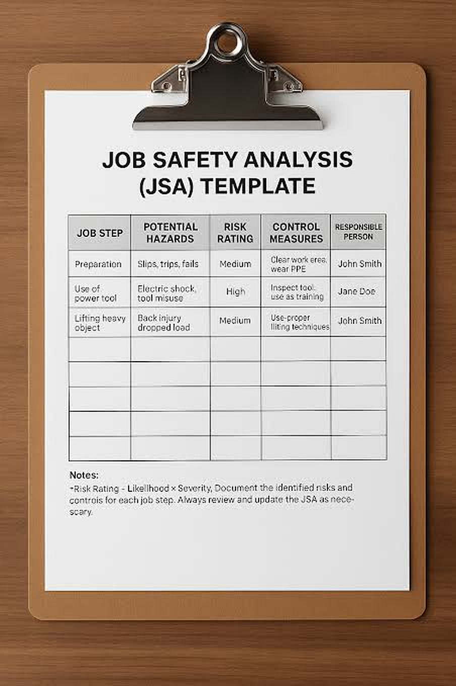
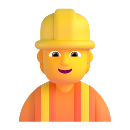
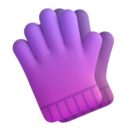
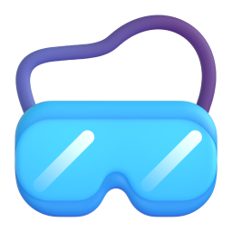

SÉCURITÉ AU TRAVAIL
LES ACRONYMES
DE SÉCURITÉ
Comment les différencier ?
JSA
SOP
SWMS
RAMS
1 · JSA
2 · SOP
3 · SWMS
Une avalanche d'acronymes
RAMS
JSA
SOP
SWMS
JSA
RAMS
SWMS
SOP
JSA
Une progression logique

1
JSA
Anticiper
2
SOP
Exécuter
3
SWMS
Haut risque
 N'importe quelle tâche
N'importe quelle tâcheJSA
Job Safety Analysis · analyse de sécurité
 ANTICIPER
ANTICIPER

Outil éteint
1
Étape 1 · préparer

2
Étape 2 · découper
3
Étape 3 · ranger
SOP
Standard Operating Procedure · procédure standard
JSA
L'analyse
MODE D'EMPLOI
1
2
3
4
 Mesures de sécurité
Mesures de sécurité Technique la plus sûre
Technique la plus sûre
Casque
Gants
LunettesSWMS
Safe Work Method Statement
⚠ HAUT RISQUE
Le bouclier ultime
JSA
L'analyse

SOP
La procédure

SWMS
Dossier de conformité
analyse + procédure
EXIGÉ PAR LA LOI
L'acronyme ? Peu importe
Aucune importance
L'essentiel : 4 piliers

SÉCURITÉ DE LA TÂCHE
Définir la tâche
Lister les étapes
Évaluer les risques
Imposer les contrôles
Des normes aujourd'hui,
un avenir durable demain
un avenir durable demain
cette avalanche
d'acronymes de
sécurité donne
vite le vertige.
Pourtant,
derrière ce jargon
se cache une progression
très logique pour
sécuriser n'importe
quelle tâche.
Tout commence par
l'anticipation
avec la JSA,
ou analyse de
sécurité.
Avant même
d'allumer l'outil,
on décortique l'opération
étape par étape pour
traquer chaque
danger potentiel.
Ensuite,
la SOP,
ou procédure
standard,
prend le relais pour
transformer cette
analyse en mode
d'emploi concret.
Elle récupère les
mesures de sécurité
et dicte la
technique d'exécution
la plus sûre,
équipement de
protection inclus.
Et pour les opérations
à haut risque,
on déploie le
bouclier ultime :
le SWMS.
Ce document fusionne
l'analyse et la
procédure en un
seul grand dossier
de conformité
exigé par la loi.
Au final,
l'acronyme imprimé en
haut de la page n'a
aucune importance.
L'essentiel,
c'est qu'il réunisse
quatre piliers :
définir la tâche,
lister les étapes,
évaluer les risques
et imposer les
bons contrôles.